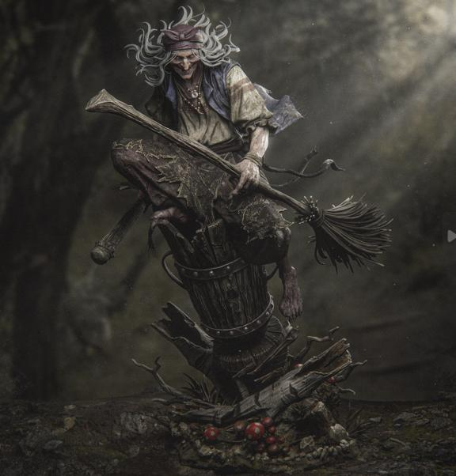
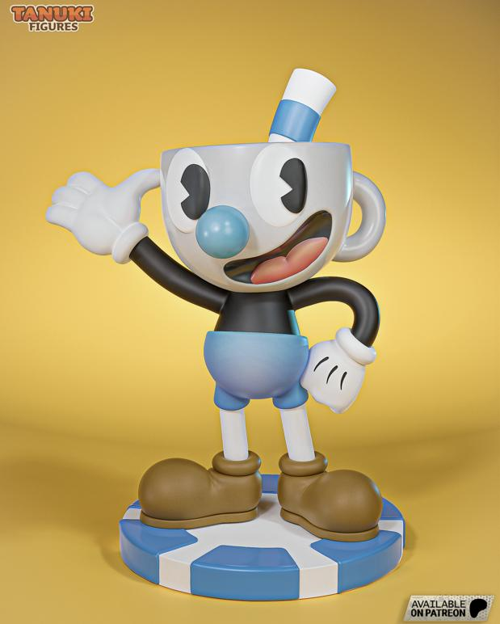

2025年04月08日STl图纸文件分享
提取码
nkui今天分享六组风格鲜明的模型：承太郎造型经典，气场十足，适合JOJO粉收藏；马克杯人趣味十足，夸张风格下细节也有不错呈现；奇诺比奥延续了马里奥系列的可爱设定，小场景表现力强；帕瓦还原度高，人物神态生动；企鹅人则展现了强烈的哥谭风格，细节丰富；最后是巴巴·雅加，整体造型诡异神秘，充满黑暗童话感。每组模型都独具特色，适合不同风格爱好者选择收藏与涂装。




链接: https://pan.baidu.com/s/1MwLLw9u4EmWYTB6odFiCUw 提取码: nkui
以上内容仅供个人使用（非商用）
ONLY for PERSONAL (NON-COMMERCIAL) use.
加群获得更多免费模型！